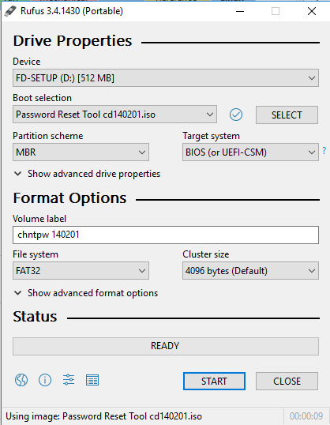

Windows password reset tool
March 11, 2019
Windows password reset tool
This bootable USB tool allows you to reset the local administrator password on a windows system. It is easy to use and can be very helpful for that old computer that has been in the closet for 10 years.
[Video: https://www.youtube.com/watch?v=oq9iJWwH33c]
Offline Windows Password & Registry Editor, usb Bootdisk or CD. This is a free software project maintained by Petter Nordahl-Hagen. (also called:Ntpasswd
and chntpw)
Downloads
- Download the bootable ISO file cd140201 (ZIP) from Pogostick, or find the CD version from the PogoStick Download page at http://pogostick.net/~pnh/ntpasswd/or http://www.chntpw.com/download/
- Download Rufus USB tool : https://rufus.ie/
Bootable USB (or CD) instructions:
You want to create a bootable USB drive.
-
- Download the Bootable “CD” *version, as you will use Rufus to “burn” this cd iso to a usb flash drive.
- Extract the .zip file.The .iso image is inside the .zip.
- *Even though there is a USB version, it is not the one you need. The USB version is for making the tool work on an existing bootable flash drive. you probably have a blank USB drive and just want to reset a password. Use the CD Version.
-
Use Rufus tool to copy the .ISO to your USB drive.
- Insert a spare, blank USB drive into your computer, and use RUFUS to turn it into a bootable disk.
- !!!!* This will erase everything on the usb drive. It is a good idea to unplug any external hard drives before you use this tool, as you do not want to accidentally pick the wrong drive.!!!***

- Click start and wait for it to finish before removing disk,
- !!!!* This will erase everything on the usb drive. It is a good idea to unplug any external hard drives before you use this tool, as you do not want to accidentally pick the wrong drive.!!!***
- Insert a spare, blank USB drive into your computer, and use RUFUS to turn it into a bootable disk.
-
Insert the disk into the locked windows computer. Boot from the USB drive (may have to hit F1, F10, or F12, etc to get to the boot menu
-
Follow the prompts, read the authors FAQ page or watch my video above for instructions.